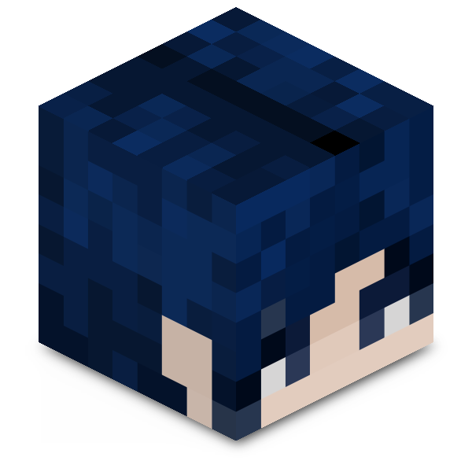

Bienvenidos a "Reyes&Friends Server", un servidor No premium de Minecraft modificado para la versión 1.12.2, creado por "AstronautMarkus" en nombre de "Reyes&Friends". Este servidor está diseñado con fines experimentales y tendrá una duración limitada.
Modalidad de Juego:
El servidor opera en modo Survival, donde no existen rangos administrativos para ningún usuario, incluyendo al creador. La única forma de sobrevivir en este mundo es colaborando mutuamente o por tu propia cuenta.
Características del Servidor:
- Versión 1.12.2: El servidor usa esta versión para priorizar una experiencia fluida y estable.
- Mods Variados: El servidor incluye una variedad de mods que introducen nuevas entidades, algunas pasivas y otras bastante hostiles.
- Mod Legendario: Destacamos la inclusión del legendario mod que permite ir al cielo, "The Aether Mod". añadiendo una dimensión completamente nueva para explorar.
- Criaturas hostiles en el día: Actualmente los mobs hostiles (zombies y pigmans) aparecen en el día, sin la capacidad de quemarse con el sol y ambos son mucho más hostiles, con fines de entregar una experiencia más desafiante
- Animales especiales: El servidor cuenta con nuevos animales por todos lados en el mapa, se libre de coleccionarlos.
- Chocobo:¿Te gustan los Chocobos?

Nota importante
Este proyecto es temporal, todo dependerá del comportamiento de los jugadores entre todos, si el resultado es positivo es muy posible que la duración del servidor aumente. Recuerda comportarte y respetar a los demás.
Capturas


Descargar Modpack
Para poder usar el modpack debes tener Forge 1.12.2 instalado, si no lo tienes puedes descargarlo desde aquí:Luego de eso, descarga el archivo .zip con todos los mods incluidos para jugar en nuestro servidor. Dentro del archivo, encontrarás instrucciones detalladas sobre cómo instalar y configurar los mods.
Antes que todo:
Ninguna de las modificaciones incluidas en el modpack me pertenece. Todos los créditos van para sus respectivos autores. Descargar ModpackDiviértete lo más que se pueda.
Información del Servidor
IP del servidor: reyesdatabase.ddns.net
Jugadores online:
Cantidad de Mods activos:
Acerca de mí: pronto :3
Por ahora eso, recuerda que la duración de este proyecto solo dependerá de tí, hasta pronto!
